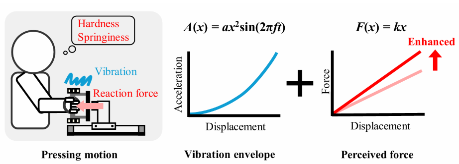
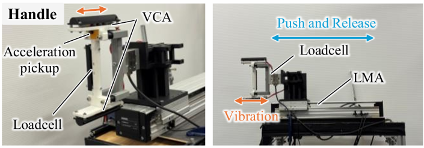
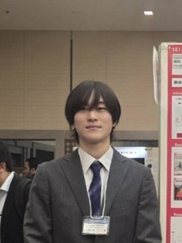
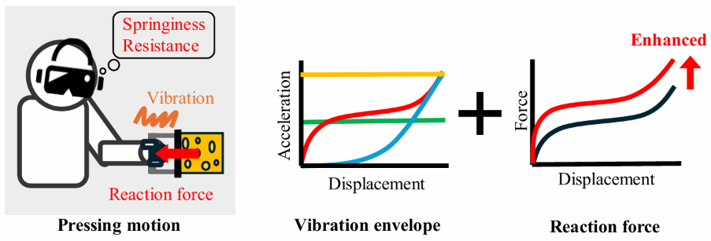
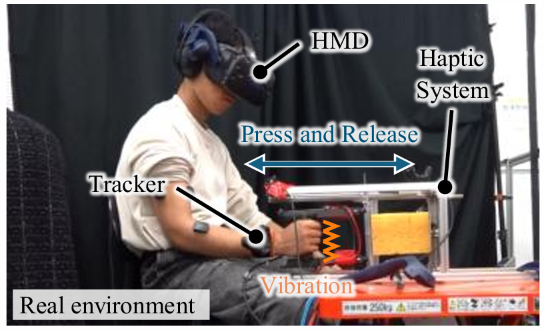
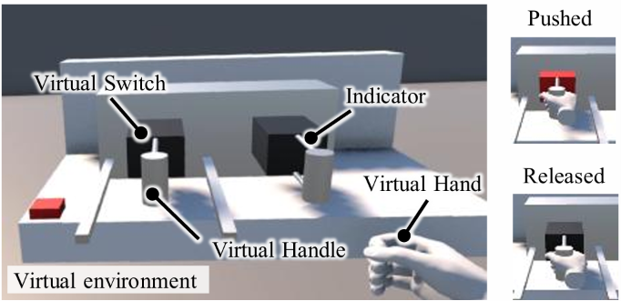
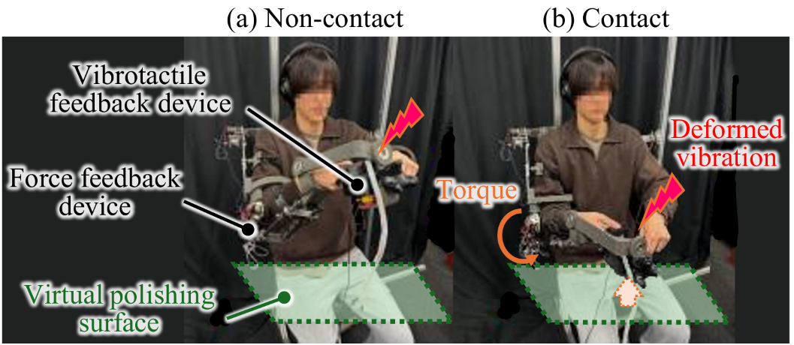
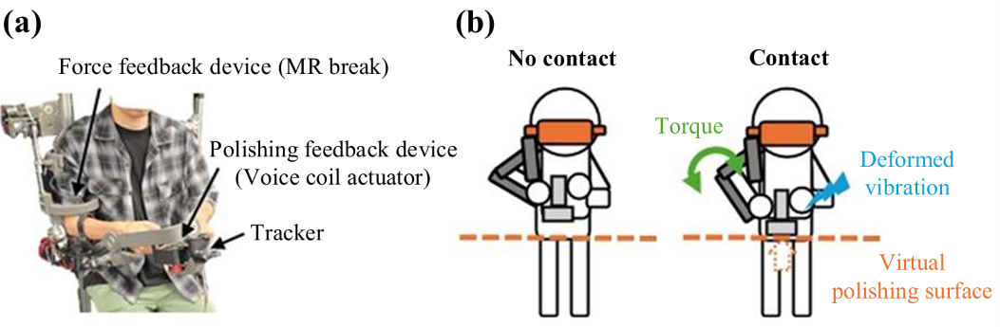
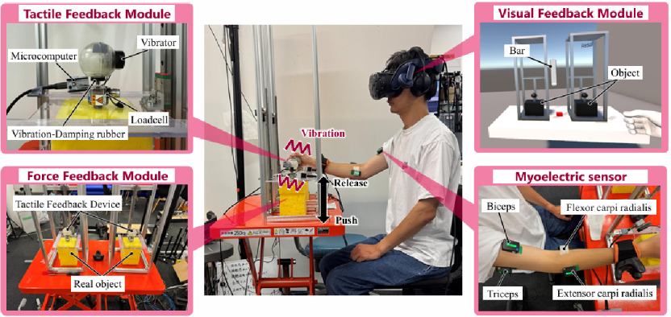

異なる仮想ばね剛性における変位依存型振動触覚刺激が剛性知覚に及ぼす影響
第27回計測自動制御学会システムインテグレーション部門講演会
2026年12月開催予定
押し込み量に応じて強まる振動を
Naruhiro Mega

中央大学大学院
理工学研究科
博士課程前期課程
ハプティクス、
主な論文・学会発表（筆頭著者）


第27回計測自動制御学会システムインテグレーション部門講演会
2026年12月開催予定
押し込み量に応じて強まる振動を



2026 IEEE International Conference on Systems, Man, and Cybernetics
2026年10月 · WeA7.2
押し込み量と反力に連動する
© 2026 IEEE. Personal use of this material is permitted. Permission from IEEE must be obtained for all other uses, in any current or future media, including reprinting/republishing this material for advertising or promotional purposes, creating new collective works, for resale or redistribution to servers or lists, or reuse of any copyrighted component of this work in other works.

2026 IEEE/ASME International Conference on Advanced Intelligent Mechatronics
2026年7月
意匠研磨の遠隔操作に向け、
© 2026 IEEE. Personal use of this material is permitted. Permission from IEEE must be obtained for all other uses, in any current or future media, including reprinting/republishing this material for advertising or promotional purposes, creating new collective works, for resale or redistribution to servers or lists, or reuse of any copyrighted component of this work in other works.

ロボティクス・メカトロニクス講演会2026
2026年6月 · 2P1-X02
意匠研磨の遠隔操作に向け、

第26回計測自動制御学会システムインテグレーション部門講演会
2025年12月 · 1E1-23
腕全体で同じ物体を押し込む際、
受賞・奨学金・研究助成
IEEE Systems, Man, and Cybernetics Society
IEEE SMC 2026への参加に対する渡航助成
公益社団法人 日本設計工学会
各学科・コースの卒業生・修了生から、最優秀な学生1名を表彰
中央大学 理工学部 精密機械工学科同窓会
学科の名声向上に大きく貢献した学生を表彰
公益社団法人 計測自動制御学会 システムインテグレーション部門
振動触覚刺激が力覚知覚に及ぼす影響の検証（1E1-23）
中央大学
学力・人物ともに特に優れ、大学全体を活性化する人材として期待される学生への給付奨学金
2026.04 — 現在
理工学研究科 精密工学専攻 博士課程前期課程
バイオメカトロニクス研究室 · 2028年3月修了見込み
2022.04 — 2026.03
理工学部 精密機械工学科 卒業
TOEIC Listening & Reading Test 800点